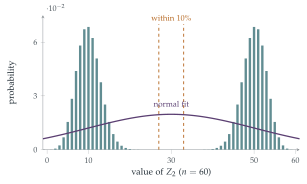

\(X_1\) and \(X_2\) are both random variables which take values \(x_1, x_2, \ldots, x_n\), with probabilities \(a_1, a_2, \ldots, a_n\) and \(b_1, b_2, \ldots, b_n\) respectively.
The value of random variable \(Y\) is defined to be that of \(X_1\) with probability \(p\) and that of \(X_2\) with probability \(q = 1 - p\).
If \(X_1\) has mean \(\mu_1\) and variance \(\sigma_1^2\), and \(X_2\) has mean \(\mu_2\) and variance \(\sigma_2^2\), find the mean of \(Y\) and show that the variance of \(Y\) is \(p\sigma_1^2 + q\sigma_2^2 + pq(\mu_1 - \mu_2)^2\).
To find the value of random variable \(B\), a fair coin is tossed and a fair six-sided die is rolled. If the coin shows heads, then \(B = 1\) if the die shows a six and \(B = 0\) otherwise; if the coin shows tails, then \(B = 1\) if the die does not show a six and \(B = 0\) if it does.
The value of \(Z_1\) is the sum of \(n\) independent values of \(B\), where \(n\) is large. Show that \(Z_1\) is a Binomial random variable with probability of success \(\frac12\). Using a Normal approximation, show that the probability that \(Z_1\) is within \(10\%\) of its mean tends to \(1\) as \(n \to \infty\).
To find the value of random variable \(Z_2\), a fair coin is tossed and \(n\) fair six-sided dice are rolled, where \(n\) is large. If the coin shows heads, then the value of \(Z_2\) is the number of dice showing a six; if the coin shows tails, then the value of \(Z_2\) is the number of dice not showing a six.
Use part (i) to write down the mean and variance of \(Z_2\). Explain why a Normal distribution with this mean and variance will not be a good approximation to the distribution of \(Z_2\). Show that the probability that \(Z_2\) is within \(10\%\) of its mean tends to \(0\) as \(n \to \infty\).
The hook
How do you find out what fraction of students have cheated in an exam, or of employees have stolen from work? Ask them directly and many will lie. In 1965 the statistician Stanley Warner invented an ingenious solution, randomised response. Each person secretly tosses a coin or rolls a die, and the outcome decides whether they answer the sensitive question truthfully or answer its opposite. The interviewer never knows which, so no individual answer is incriminating; yet, because the randomisation probabilities are known, the overall proportion can still be estimated.
This question explores the mathematics behind it. Randomising each person independently (part (ii)) gives a well-behaved total that pins down the proportion. Randomising everyone with a single coin toss (part (iii)) produces a total with the same mean but a completely different, two-humped distribution, which tells us almost nothing. Where you put the randomness matters.
Before you start
\(Y\) is \(X_1\) with probability \(p\) and \(X_2\) with probability \(q\). What is \(\mathrm{E}(Y)\)? What is \(\mathrm{E}(Y^2)\)?
Conditioning on which variable is chosen, \(\mathrm{E}(Y) = p\mu_1 + q\mu_2\), and \(\mathrm{E}(Y^2) = p\,\mathrm{E}(X_1^2) + q\,\mathrm{E}(X_2^2) = p(\sigma_1^2 + \mu_1^2) + q(\sigma_2^2 + \mu_2^2)\).
Working it through
Stage 1 The variance of a mixture
\[\mathrm{Var}(Y) = p(\sigma_1^2 + \mu_1^2) + q(\sigma_2^2 + \mu_2^2) - (p\mu_1 + q\mu_2)^2.\] The \(\mu\) terms are \(p\mu_1^2 + q\mu_2^2 - p^2\mu_1^2 - 2pq\mu_1\mu_2 - q^2\mu_2^2 = pq\mu_1^2 + pq\mu_2^2 - 2pq\mu_1\mu_2\), using \(p - p^2 = pq\) and \(q - q^2 = pq\). So \[\mathrm{Var}(Y) = p\sigma_1^2 + q\sigma_2^2 + pq(\mu_1 - \mu_2)^2. \qed\] The variance of a mixture is the average variance within the components, plus the variance between their means.
Stage 2 Independent randomisation
What is \(\mathrm{P}(B = 1)\)? Are the \(n\) values of \(B\) independent?
\(\mathrm{P}(B = 1) = \frac12\cdot\frac16 + \frac12\cdot\frac56 = \frac12\). The \(n\) values are independent, each with success probability \(\frac12\), so \(Z_1 \sim \mathrm{B}(n, \frac12)\), with mean \(\frac n2\) and standard deviation \(\frac{\sqrt n}{2}\).
Within \(10\%\) of the mean means \(|Z_1 - \frac n2| < \frac{n}{20}\). In standard units, this is \(|Z| < \frac{n/20}{\sqrt n/2} = \frac{\sqrt n}{10}\), which tends to infinity, so the probability tends to \(1\).■
Stage 3 One coin for everybody
Now one coin toss decides for all \(n\) dice. Given heads, what is the distribution of \(Z_2\)? Given tails? Use part (i).
Given heads, \(Z_2 \sim \mathrm{B}(n, \frac16)\): mean \(\frac n6\), variance \(\frac{5n}{36}\). Given tails, \(Z_2 \sim \mathrm{B}(n, \frac56)\): mean \(\frac{5n}{6}\), variance \(\frac{5n}{36}\). By part (i) with \(p = q = \frac12\), \[\mathrm{E}(Z_2) = \frac n2, \qquad \mathrm{Var}(Z_2) = \frac{5n}{36} + \frac14\Bigl(\frac{4n}{6}\Bigr)^2 = \frac{5n}{36} + \frac{n^2}{9}.\]
Where is most of the probability? Is there much near the mean \(\frac n2\)?
\(Z_2\) has two humps, near \(\frac n6\) and \(\frac{5n}{6}\), each of width about \(\sqrt n\) (Figure 13.5.1), and almost nothing in between. A normal distribution with the same mean and variance would be a single hump centred at \(\frac n2\), exactly where \(Z_2\) almost never is. For \(Z_2\) to be within \(10\%\) of \(\frac n2\), a \(\mathrm{B}(n, \frac16)\) or \(\mathrm{B}(n, \frac56)\) variable must lie in \([0.45n, 0.55n]\). For \(\mathrm{B}(n, \frac16)\) that is at least \(0.28n\) above its mean, which is about \(\frac{0.28n}{0.37\sqrt n} \approx 0.75\sqrt n\) standard deviations, so the probability tends to \(0\); similarly for \(\mathrm{B}(n, \frac56)\).■

Looking back
Condition on the hidden choice. The mixture’s mean and variance came from conditioning on which component was chosen.
Variance within plus variance between. The extra term \(pq(\mu_1 - \mu_2)^2\) measured the spread between the two components.
Mean and variance are not the whole story. \(Z_2\) had the same mean as \(Z_1\), but a completely different shape.
What’s really going on
Randomised response
In Warner’s scheme, each respondent answers “Do you belong to group \(A\)?” with probability \(p\), and “Do you not belong to group \(A\)?” with probability \(1 - p\), choosing privately. If a fraction \(\pi\) belong to \(A\), the probability of a “yes” is \[\lambda = p\pi + (1 - p)(1 - \pi),\] so from the observed fraction of yeses, \(\hat\lambda\), we can estimate \(\hat\pi = \frac{\hat\lambda - (1 - p)}{2p - 1}\) (provided \(p \neq \frac12\)). Part (ii) of the question is exactly this, with each person’s own die deciding. The price of privacy is precision: dividing by \(2p - 1\) inflates the variance, so a randomised survey needs more respondents than a direct one. But each person randomises independently, so the law of large numbers works. Part (iii) shows what goes wrong if the randomisation is shared: the uncertainty about the single coin never averages out.
Differential privacy
Randomised response is the ancestor of differential privacy, a mathematical definition of privacy introduced by Cynthia Dwork and colleagues in 2006: a procedure is private if adding or removing any one person’s data changes the probability of any output by at most a small factor. Technology companies use it to collect usage statistics, and the United States Census Bureau used it for the 2020 census, adding carefully calibrated random noise to published figures so that no individual’s answers could be reconstructed.
The identity in part (i) is a special case of the law of total variance: \(\mathrm{Var}(Y) = \mathrm{E}\bigl(\mathrm{Var}(Y \mid C)\bigr) + \mathrm{Var}\bigl(\mathrm{E}(Y \mid C)\bigr)\), where \(C\) is the hidden choice. It underlies the analysis of variance (ANOVA), introduced by Ronald Fisher in the 1920s for agricultural experiments at Rothamsted, which splits the variation in crop yields into the part explained by fertilisers or varieties and the part left unexplained.
The thinking skill
A mean and variance describe a single-humped distribution well, but can be badly misleading for a mixture. Ask where the probability actually lies.
At university, mixture models are used to describe populations made of several groups, and the law of total variance is a standard tool in statistics, from survey design to hierarchical models.
Try this next
The twins. (From STEP II, 2005.) Twins share a computer; the one online is Anna with probability \(p\), who answers truthfully with probability \(a\), or Bella, who does so with probability \(b\). I ask them to toss a coin and say whether it came down heads, and get “yes”. Show that the probability that it was heads is \(\frac12\) if and only if \(2(ap + bq) = 1\). If I then ask again and get “no”, show that the probability of heads is \(\frac12\); if I get “yes” again, show that it is \(\frac12\) provided \(2(ap + bq) = 1\).
Estimating \(\pi\). In a Warner survey with \(p = \frac34\), \(400\) people answer and \(160\) say yes. Estimate the proportion \(\pi\) in group \(A\), and find the approximate standard error of your estimate.
Total variance. Prove the law of total variance for a discrete hidden variable \(C\) with several values.
Shared coins. In part (iii), what is the probability that \(Z_2 > \frac n2\)? Explain why, for large \(n\), it is close to \(\frac12\) even though \(Z_2\) is almost never close to \(\frac n2\).
Further reading
Stanley Warner, “Randomized response: a survey technique for eliminating evasive answer bias”, Journal of the American Statistical Association 60 (1965).
Cynthia Dwork & Aaron Roth, The Algorithmic Foundations of Differential Privacy (free online). The modern theory; the first chapters are accessible.
David Spiegelhalter, The Art of Statistics (Pelican), on surveys and their pitfalls.